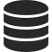
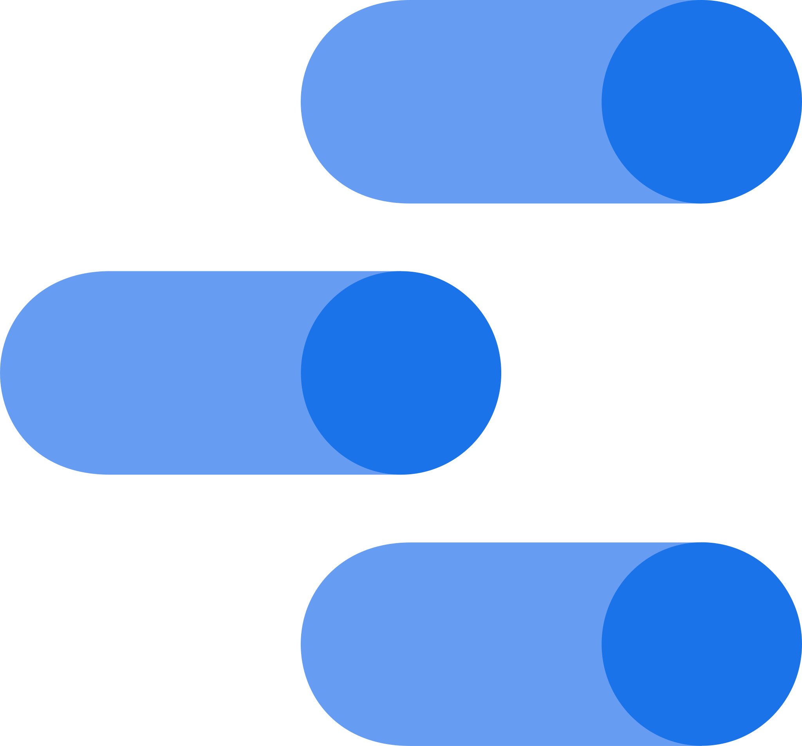

ℹ️ Flujo de información
Instalación de paquete npm
+
Interacción del usuario con
git

Base de Datos

Google Data Studio
🦶 Primer paso
Instalar la dependencia yeeeha en nuestro
proyecto (package.json)
{
"dependencies": {
"yeeeha": "git+https://github.com/redradix/yeeeha.git"
},
"yeeeha": {
"projectName": "Redradix"
}
}
⌨️ Interacción del usuario con Git
Una vez que el usuario comience a utilizar Git, se enviará a un base de datos la siguiente información:
-
userName--> Hash obtenido a partir del usuario de Git (para que el usuario permanezca en el anónimato) event_name--> commit, push o merge-
projectName--> Nombre del repositorio (se obtiene del package.json) day--> Díahour--> Hora
Nota: Se podrá obtener información de los usuarios que utlicen un cliente de Git tipo Sourcetree o GitKraken.
🔍 Observando la información en Google Data Studio
La visualización de los datos obtenidos se realizará mediante un dashboard enfocado a analizar información agregada perteneciente a la actividad de cada grupo o proyecto. En un principio, cualquier PM o Lead estará en condiciones de detectar anomalías y/o oportunidades de mejora en el desarrollo de un proyecto. Responde a preguntas sencillas como cuáles son los horarios de mayor actividad en el equipo, para evitar proponer ceremonias o reuniones en esas franjas.